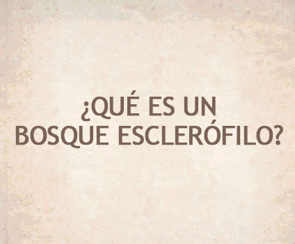

<div class="container">
  <div class="" style="background-color:rgba(67,54,48,0.1);">
    <div class="row">
      
    </div>

    <div class="row">
      <div class="one-half column padding-left padding-right">
        <h1 class="align-center">
          ¿qué tipo de BOSQUE es?
        </h1>
        <p class="align-center">
          Es un bosque del tipo Esclerófilo, propio del clima mediterráneo de estación seca prolongada, por lo que existe en solo 5 lugares del mundo.
        </p>
        <p class="align-center">
          En nuestro país dicho bosque se da en la zona central, entre las regiones IV y VIII. Alberga flora y fauna con alguna categoría de conservación, por lo que es muy importante entender su relevancia para preservarlo
        </p>
      </div>

      <div class="one-half column">
        
      </div>
    </div>

  </div>
</div>
